Free DIY kit // MFG001 / flight-tracker
A cockpit instrument for your desk.
Flight Tracker is a round, 720×720 ADS-B scope for a Raspberry Pi 4 and a Waveshare 4-inch DSI touch panel. Live traffic sits inside the screen, with range rings and weather. The names printed on the case are labels only.
Purpose-built. Field-proven.
Free on GitHub and MakerWorld. Not sold. New units open on KJFK until you set a home airport.
Instruction booklets (PDF): Overview and Build · Software.
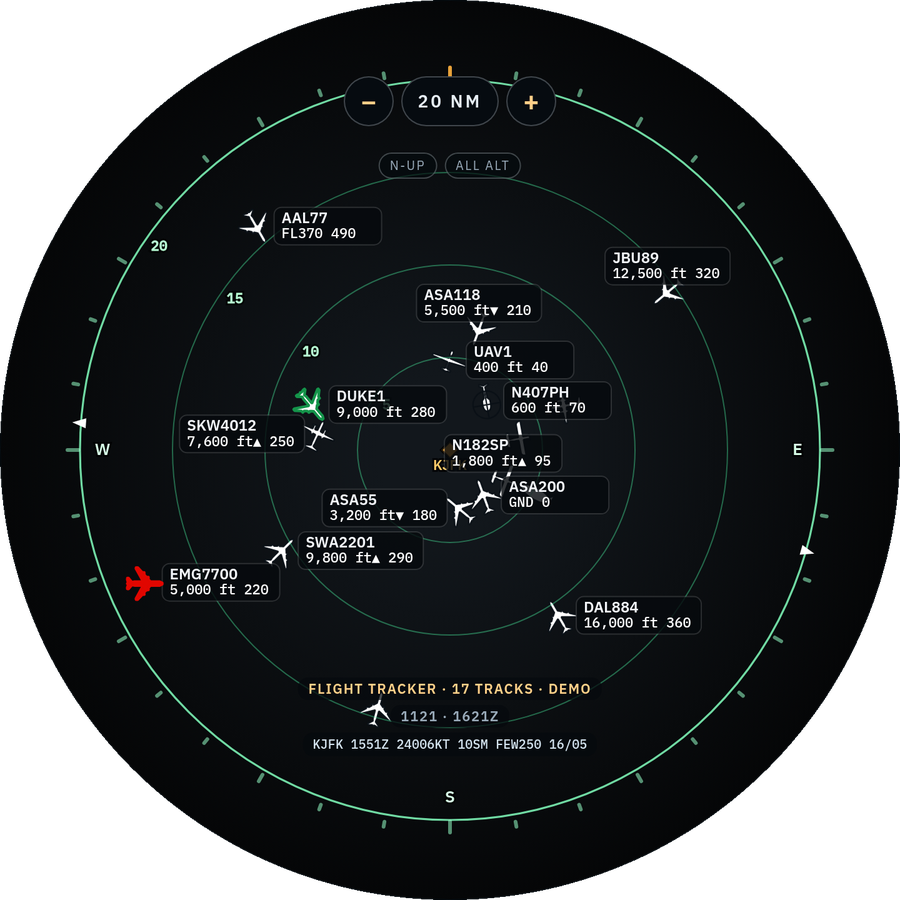
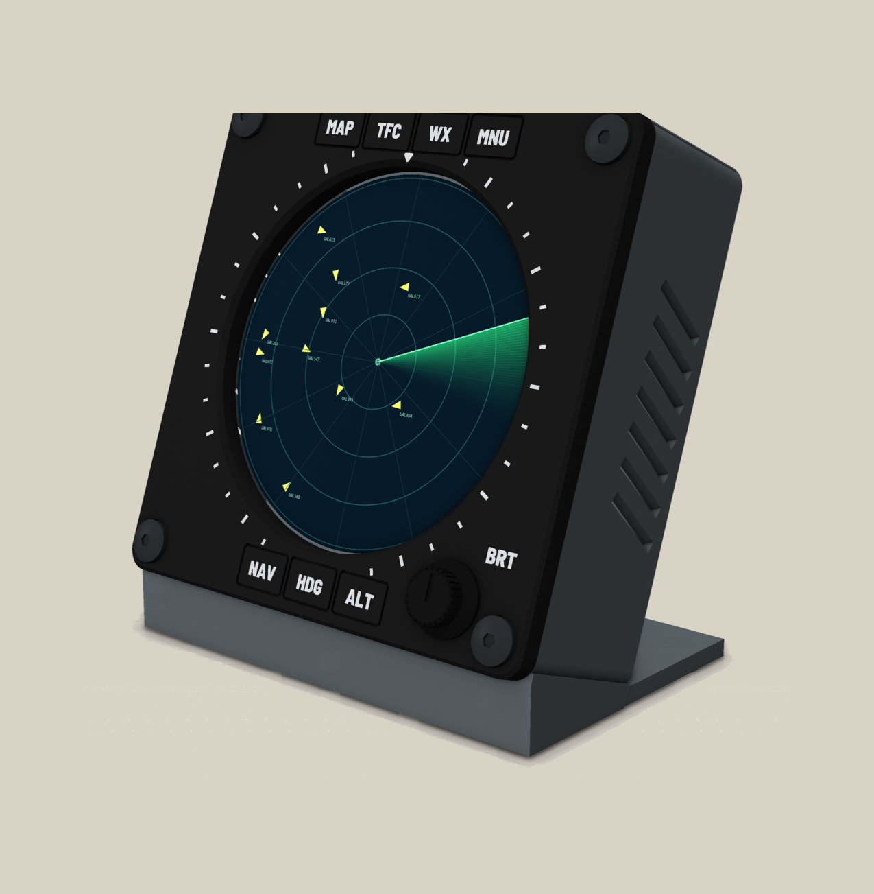
01 — Capabilities
What the screen shows.
-
01
Live aircraft radar
Maverick aircraft icons, color-coded altitude, callsign, speed, and range rings. Select 10, 20, 30, 40, 50, 75, or 100 NM. 100 NM is the maximum. Tap a tail-number box for flight details. The default feed is adsb.fi.
-
02
Weather radar
A precipitation overlay on the screen, plus the nearest METAR. Turn the overlay on or off, and set opacity, on the setup page under WEATHER.
-
03
Emergency alerts
A squawk of 7500, 7600, or 7700 flashes the icon red. You can also turn on a chime on the setup page under ALERTS.
-
04
Updates
Open SOFTWARE on the setup page and tap CHECK FOR UPDATES. Then tap INSTALL UPDATE, and UPDATE NOW when the screen asks.
-
05
Five map styles
Dark canvas, street map, satellite, FAA VFR sectional, and a drawn radar scope. Choose a style on the setup page under BACKGROUND. Set brightness on the SCREEN section. Change range with − and + on the screen.
02 — Map styles
Five map styles.
Rendered from the built-in demo, home at KJFK, 20 NM.
-
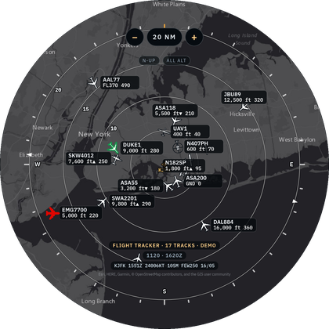
Dark -
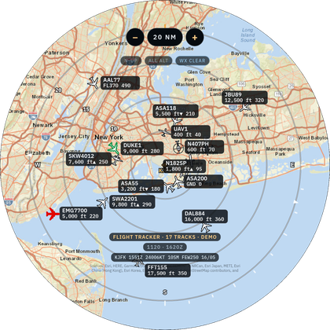
Light + WX -
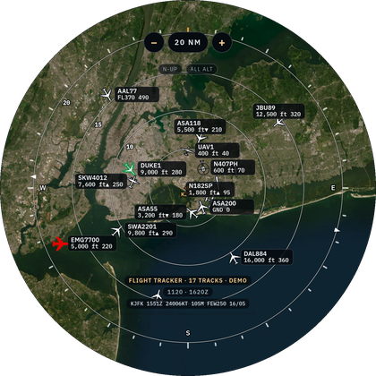
Satellite -
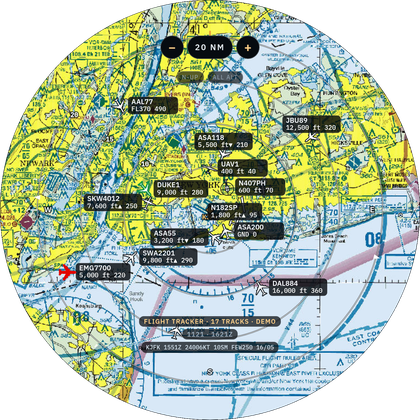
Sectional -
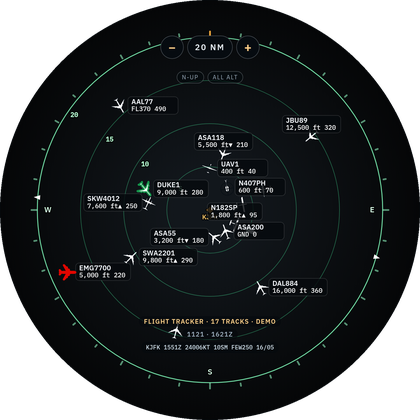
Scope
03 — What you need
A printed case and a short parts list.
The Flight Tracker case is a 140 mm square instrument, about 140 × 155 × 100 mm. Both H2S and A1 print profiles are on MakerWorld, supports off. H2S: about 5 h 56 m, 224 g. A1: about 7 h 16 m, 224 g; plate 1 needs AMS lite for the gray legends.
- Set A: thin faceplate and BRT knob — black with gray legend inlays. Print files: MakerWorld listing
- Set B: can + foot, and four original dome caps — Dark Gull Gray
- H2S and A1 print profiles on MakerWorld, supports off. A1 plate 1 needs AMS lite for the gray legends
Electronics
- Raspberry Pi 4
- Waveshare 4inch DSI LCD (C), 720 × 720 capacitive touch
- USB-C power supply suitable for a Raspberry Pi 4, and a microSD card
- Raspberry Pi OS Bookworm or Trixie, with a desktop
- USB-C cable, straight plug, 15–20 mm body
- Cooling fan and heatsink on the Pi (Waveshare PI4-FAN-PWM, 17 mm stack, verified on the built unit)
Fasteners
- 4 × CNC Kitchen M2.5×4 heat-set inserts
- 4 × M2.5×8 socket-head screws, ISO 4762
- 3 × M4×8 button-head screws, into the display’s own bosses
Tools
- Soldering iron for the heat-set inserts, 10–20 °C above print temperature
- Hex key with about 30 mm of reach, for the rear M4s
- Hex driver or key for M2.5 ISO 4762 socket-head screws
No receiver is required. The default feed is adsb.fi over the internet, for personal, non-commercial use. Point the setup page at your own readsb or dump1090 aircraft.json when you have one. Rear depth is designed for a 17 mm Waveshare PI4-FAN-PWM fan heatsink; that stack fits and works on the built unit.
04 — Build
Print, stack, install, fly.
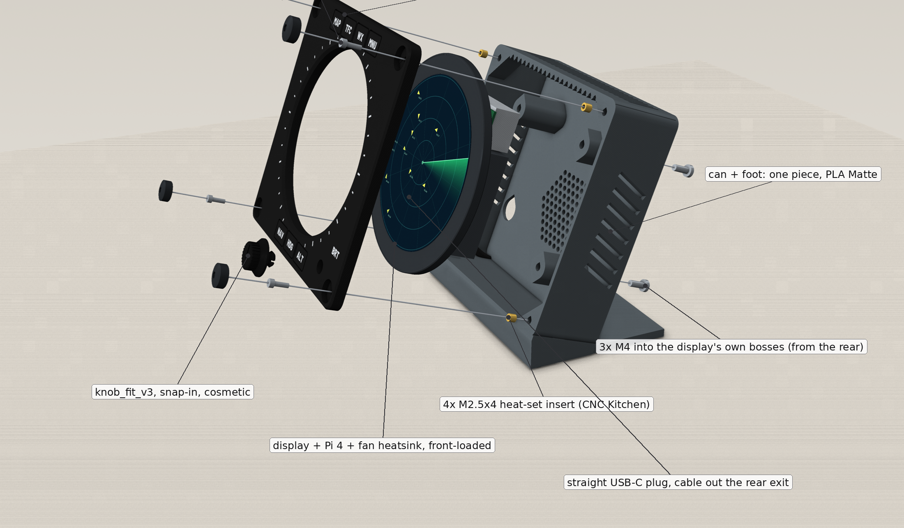
- Print. Run Set A (thin faceplate and knob, black) and Set B (can, foot, and four dome caps, Dark Gull Gray). No supports.
- Inserts. Press the four M2.5×4 heat-set inserts into the front corners of the can.
- Cable. Thread the USB-C cable through the rear exit from the outside, then plug it into the Pi.
- Stack. Front-load the display, Pi, and fan. Fit the three M4s from the rear.
- Bezel. Fit the faceplate with four M2.5×8 screws, press on the original dome caps, and snap in the knob.
- Software. Flash Raspberry Pi OS (hostname and user
flighttracker), then install v1.0.20 withdeploy/push-update.sh. Full commands are in the build guide. - After install. Hold the clock for 2 seconds, then tap WI-FI SETUP. Or use the join card if it is already on the screen. Scan the QR to join FlightTracker-Setup. Scan the next QR to open setup. Open WI-FI, pick your network, enter the password, and tap CONNECT. You are done when the screen shows CONNECTED. The scope opens on KJFK until you set your own location.
The illustrated, step-by-step guide — including a one-page assembly sheet — is in the build guide.
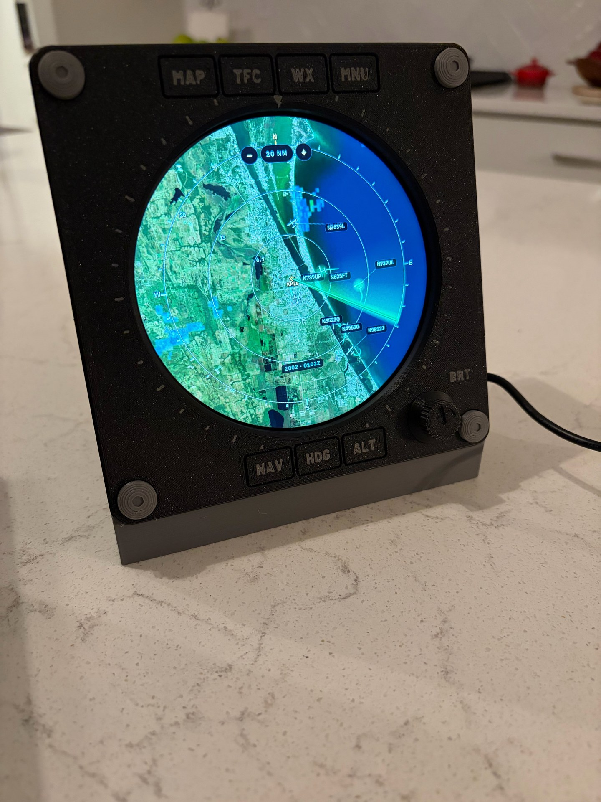
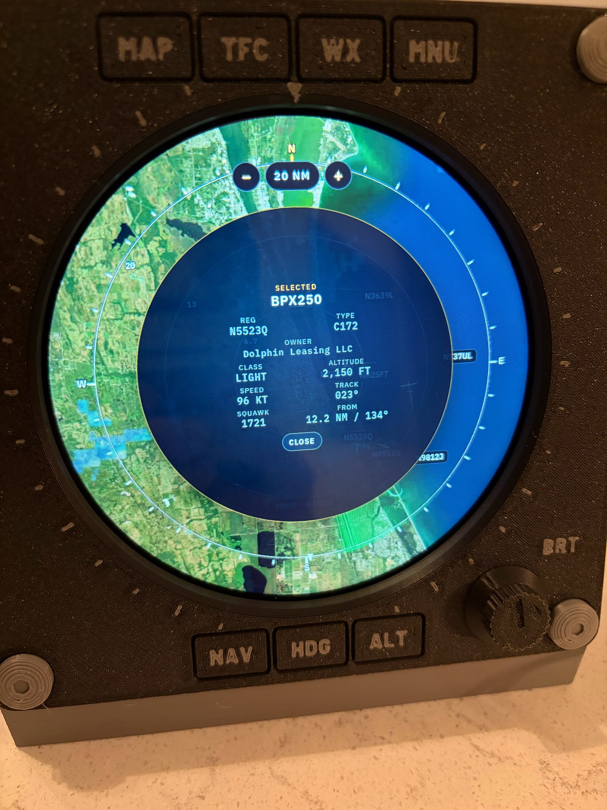
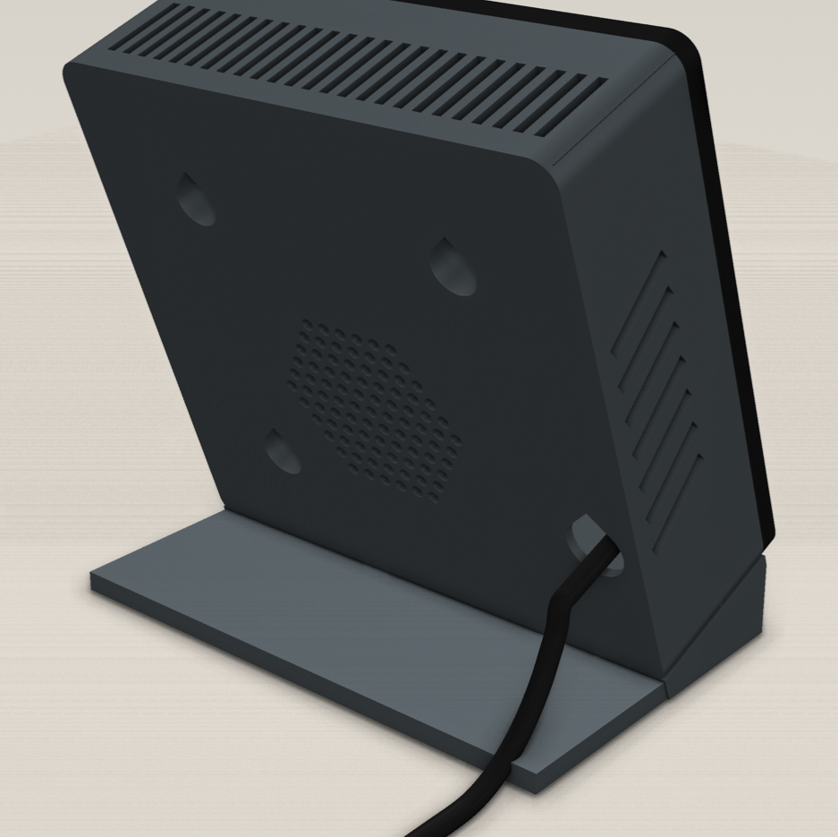
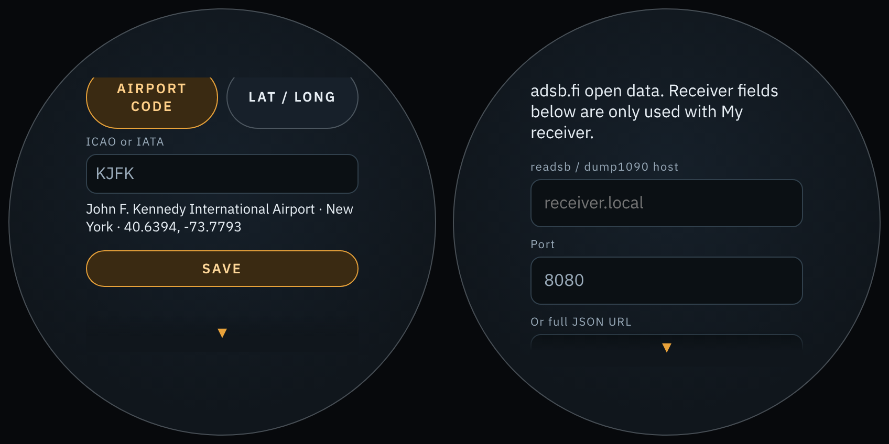
05 — Install
Flash, connect, run the installer.
- Flash. Use Raspberry Pi Imager 2.0.12 or newer and choose Raspberry Pi OS (64-bit). Fill in every settings step: hostname and user
flighttracker, a password you will remember, your Wi-Fi country, and SSH with password login. - Check the card. Put the card back in your computer and run
prep-sd-card.sh. Every line should say OK. If your Wi-Fi name starts or ends with a space, Imager drops it and the Pi never joins: rename the network, or fix the card withbash prep-sd-card.sh wifi. - Connect. An Ethernet cable is the most reliable first install. Power on and wait about five minutes. The screen stays blank until the software is installed.
- Install. From a Mac or Linux computer on the same network, download the v1.0.20 release tarball and run
deploy/push-update.sh. It asks for your own Pi password, the one you set in Imager. No GitHub account is needed. Ifflighttracker.localdoes not answer, use the tracker’s IP address from your router. - Reboot. The hostname is
flighttracker. The setup page answers atflighttracker.local. - Wi-Fi. Hold the clock for 2 seconds, then tap WI-FI SETUP. Or use the join card if it is already on the screen. Scan the QR to join FlightTracker-Setup. Scan the next QR to open setup. Open WI-FI, pick your network, enter the password, and tap CONNECT. You are done when the screen shows CONNECTED. The radar opens centered on KJFK until you set a home airport. Everyday use is in the software guide.
Full first-install steps are in the build guide and in the GitHub flashing and install sections. After the unit is running, use the software guide to connect Wi-Fi, set your location, and check for updates.
06 — Updates
Check for updates on the setup page.
- Open SOFTWARE on the setup page.
- Tap CHECK FOR UPDATES.
- Tap INSTALL UPDATE.
- When the screen asks, tap UPDATE NOW.
Updates are signed and published on the public MFG001/flight-tracker GitHub page. No account is needed. If an update does not start cleanly, the unit goes back to the previous version.
07 — Get the kit
Software on GitHub. Case on MakerWorld.
Install
GitHub
Source, installer, and signed releases for MFG001/flight-tracker.
github.com/MFG001/flight-trackerPrint files
MakerWorld
H2S and A1 print profiles, including the thin faceplate and original dome caps. Open the MakerWorld listing for the model.
Print on MakerWorldOverview and Build booklet
A printable instruction booklet: what the unit is, what you need, and how to assemble the case.
Download the Overview and Build PDFSoftware booklet
A printable instruction booklet: turn the unit on, connect Wi-Fi, use the setup page, and install updates.
Download the Software PDF